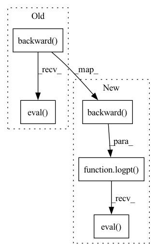

Pattern ID :19436

Before Change
pt = model.test_point
array = np.random.randn(*pt[x0.name].shape)
transform = x0.tag.transform
logp_nojac = logpt(x, transform.backward(array), jacobian=False)
jacob_det = transform.jacobian_det(aesara.shared(array))
assert logpt(x).ndim == jacob_det.ndim
elementwiselogp = logp_nojac + jacob_det
close_to(logpt(x, array).eval(), elementwiselogp.eval(), tol)
def check_vectortransform_elementwise_logp(self, model, vect_opt=0):
x = model.free_RVs[0]
After Change
pt = model.test_point
array = np.random.randn(*pt[x0.name].shape)
transform = x0.tag.transform
logp_notrans = logpt(x, transform.backward(x, array), transformed=False)
jacob_det = transform.jacobian_det(x, aesara.shared(array))
assert logpt(x).ndim == jacob_det.ndim
v1 = logpt(x, array, jacobian=False).eval()
v2 = logp_notrans.eval()
close_to(v1, v2, tol)
def check_vectortransform_elementwise_logp(self, model, vect_opt=0):
x = model.free_RVs[0]
In pattern: SUPERPATTERN
Frequency: 3
Non-data size: 5
Instances
Fragment ID: 63416275
Project Name: pymc-devs/pymc3
Commit Name: 9450aaf0d9c145a640bb0347da023dfaeeb241f0
Time: 2021-06-05
Author: brandonwillard@users.noreply.github.com
File Name: pymc3/tests/test_transforms.py
M Class Name: TestElementWiseLogp
N Class Name: TestElementWiseLogp
M Method Name: check_transform_elementwise_logp(2)
N Method Name: check_transform_elementwise_logp(2)
M Parent Class: SeededTest
N Parent Class: SeededTest
M File Name: pymc3/tests/test_transforms.py
N File Name: pymc3/tests/test_transforms.py
M Start Line: 263
M End Line: 276
N Start Line: 278
N End Line: 292
'>
Before Change
pt = model.initial_point
array = np.random.randn(*pt[x0.name].shape)
transform = x0.tag.transform
logp_notrans = logpt(x, transform.backward(array, *x.owner.inputs), transformed=False)
jacob_det = transform.log_jac_det(aesara.shared(array), *x.owner.inputs)
assert logpt(x, sum=False).ndim == jacob_det.ndim
v1 = logpt(x, array, jacobian=False).eval()
v2 = logp_notrans.eval()
close_to(v1, v2, tol)
def check_vectortransform_elementwise_logp(self, model, vect_opt=0):
x = model.free_RVs[0]
After Change
pt = model.recompute_initial_point(0)
test_array_transf = floatX(np.random.randn(*pt[x_val_transf.name].shape))
transform = x_val_transf.tag.transform
test_array_untransf = transform.backward(test_array_transf, *x.owner.inputs).eval()
// Create input variable with same dimensionality as untransformed test_array
x_val_untransf = at.constant(test_array_untransf).type()
jacob_det = transform.log_jac_det(test_array_transf, *x.owner.inputs)
assert logpt(x, sum=False).ndim == x.ndim == jacob_det.ndim
v1 = logpt(x, x_val_transf, jacobian=False).eval({x_val_transf: test_array_transf})
v2 = logpt(x, x_val_untransf, transformed=False).eval({x_val_untransf: test_array_untransf})
close_to(v1, v2, tol)
def check_vectortransform_elementwise_logp(self, model):
x = model.free_RVs[0]
'>
Fragment ID: 63416273
Project Name: pymc-devs/pymc3
Commit Name: a44515c41288e2f5230ce0b7f3b312ff8c9e7885
Time: 2021-12-13
Author: ricardo.vieira1994@gmail.com
File Name: pymc/tests/test_transforms.py
M Class Name: TestElementWiseLogp
N Class Name: TestElementWiseLogp
M Method Name: check_transform_elementwise_logp(2)
N Method Name: check_transform_elementwise_logp(2)
M Parent Class: SeededTest
N Parent Class: SeededTest
M File Name: pymc/tests/test_transforms.py
N File Name: pymc/tests/test_transforms.py
M Start Line: 287
M End Line: 300
N Start Line: 287
N End Line: 302
'>
Before Change
pt = model.initial_point
array = np.random.randn(*pt[x0.name].shape)
transform = x0.tag.transform
logp_nojac = logpt(x, transform.backward(array, *x.owner.inputs), transformed=False)
jacob_det = transform.log_jac_det(aesara.shared(array), *x.owner.inputs)
// assert logpt(x).ndim == jacob_det.ndim
// Hack to get relative tolerance
a = logpt(x, array.astype(aesara.config.floatX), jacobian=False).eval()
b = logp_nojac.eval()
close_to(a, b, np.abs(0.5 * (a + b) * tol))
@pytest.mark.parametrize(
"sd,size",
After Change
pt = model.recompute_initial_point(0)
test_array_transf = floatX(np.random.randn(*pt[x_val_transf.name].shape))
transform = x_val_transf.tag.transform
test_array_untransf = transform.backward(test_array_transf, *x.owner.inputs).eval()
// Create input variable with same dimensionality as untransformed test_array
x_val_untransf = at.constant(test_array_untransf).type()
jacob_det = transform.log_jac_det(test_array_transf, *x.owner.inputs)
// Original distribution is univariate
if x.owner.op.ndim_supp == 0:
assert logpt(x, sum=False).ndim == x.ndim == (jacob_det.ndim + 1)
// Original distribution is multivariate
else:
assert logpt(x, sum=False).ndim == (x.ndim - 1) == jacob_det.ndim
a = logpt(x, x_val_transf, jacobian=False).eval({x_val_transf: test_array_transf})
b = logpt(x, x_val_untransf, transformed=False).eval({x_val_untransf: test_array_untransf})
// Hack to get relative tolerance
close_to(a, b, np.abs(0.5 * (a + b) * tol))
@pytest.mark.parametrize(
'>
Fragment ID: 63416270
Project Name: pymc-devs/pymc3
Commit Name: a44515c41288e2f5230ce0b7f3b312ff8c9e7885
Time: 2021-12-13
Author: ricardo.vieira1994@gmail.com
File Name: pymc/tests/test_transforms.py
M Class Name: TestElementWiseLogp
N Class Name: TestElementWiseLogp
M Method Name: check_vectortransform_elementwise_logp(2)
N Method Name: check_vectortransform_elementwise_logp(3)
M Parent Class: SeededTest
N Parent Class: SeededTest
M File Name: pymc/tests/test_transforms.py
N File Name: pymc/tests/test_transforms.py
M Start Line: 303
M End Line: 321
N Start Line: 306
N End Line: 326